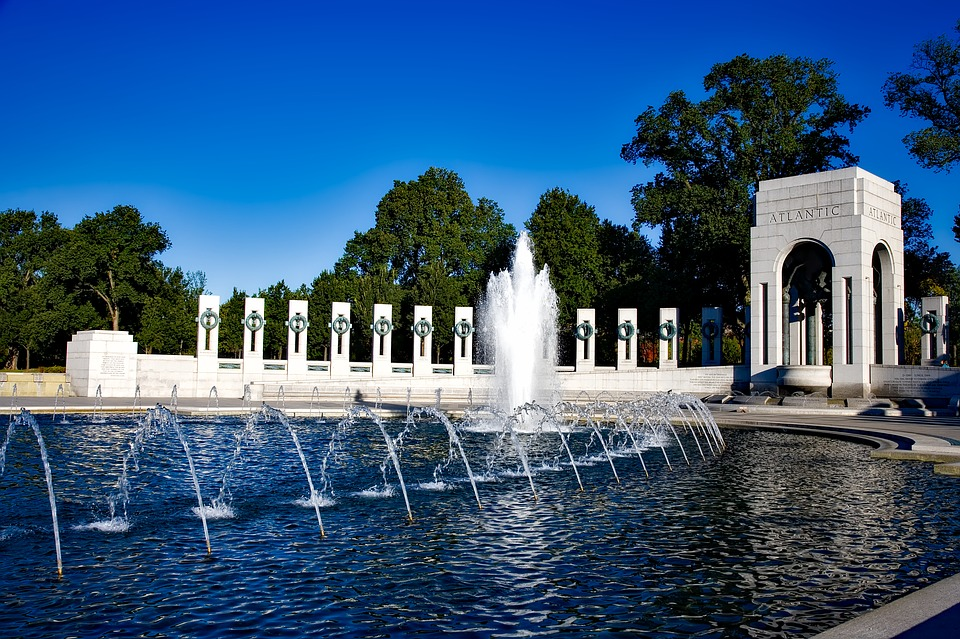
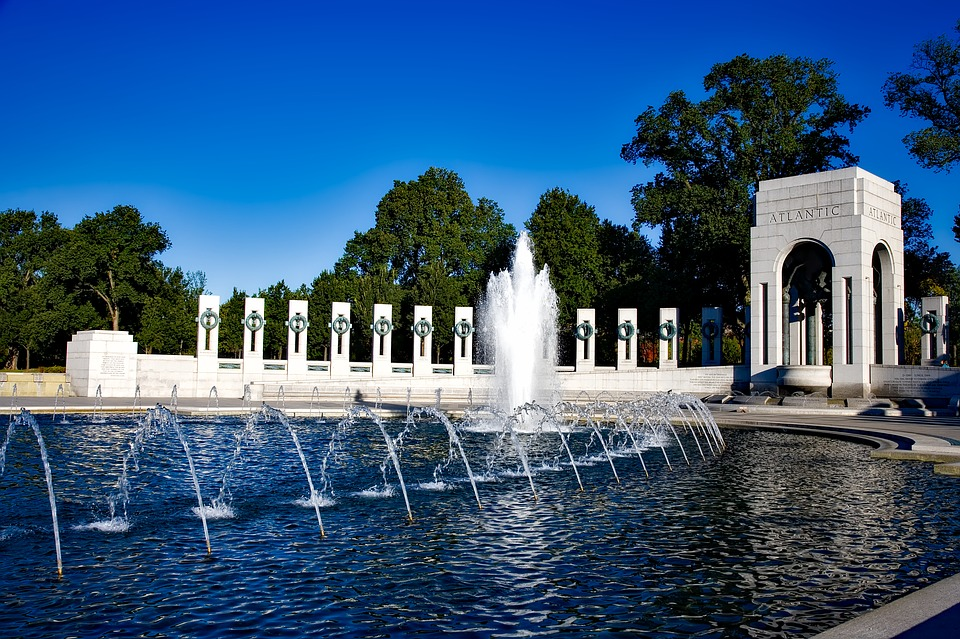

Washington, DC
Washington DC, the capital of the U.S., is known for its density of monuments and memorials, which serve as a meaningful reminder of history. Most of the museums and memorials have free admission!
Washington Monument
The Washington Monument is the world's tallest obelisk, standing 555 feet tall. It's made of mable, and is located in the National Mall. Visitors can go inside and take an elevator up to the observation deck, where you can look through a tiny window.
Arlington National Cemetary
Arlington National Cemetery is the U.S. military cemetary. It spans 624 acres, and has over 400,000 soldiers. One of the memorials, the Tomb of the Unknown Soldier, gains a lot of attention. Gurads stand by it at all times, and visitors often watch the changing of the guard. Eventhough this tomb contains the remains of a few unkown soldiers, it honors all of the unidentified solider who have died while in service.
Smithsonian Museums
There are numberous Smithsonian museums with a wide range of themes from art to air and space. The National Zoo has pandas! I've been to the Air and Space Museum and the zoo. I still have many more to see.
Memorials

 

Washington D.C. is full of memorials, mostly in the form of architecture and statues. To name a few, there are memorials honoring FDR, Vietnam War Veterans, Korean War Veterans, Martin Luther King Jr., and Thomas Jefferson.